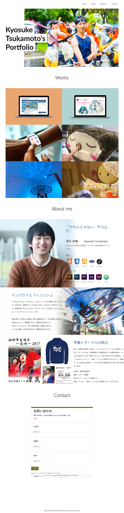

就活ポートフォリオサイト
XD / HTML / CSS / Bootstrap
制作時期：2017年11月 / 制作時間：1人月
学生時代に就活で使用していたポートフォリオサイトです。作ってきた作品に使用した技術や工夫した点を伝えるために、各作品の制作過程を記載しています。また、作品の説明の他に、好きなことや大切にしていること、就活の軸などを伝えることで「自分」という人間を知ってもらう工夫を行いました。
実際のサイトはこちら
PREV
NEXT
KYOSUKE TSUKAMOTO
XD / HTML / CSS / Bootstrap
制作時期：2017年11月 / 制作時間：1人月
学生時代に就活で使用していたポートフォリオサイトです。作ってきた作品に使用した技術や工夫した点を伝えるために、各作品の制作過程を記載しています。また、作品の説明の他に、好きなことや大切にしていること、就活の軸などを伝えることで「自分」という人間を知ってもらう工夫を行いました。
実際のサイトはこちら
PREV
NEXT